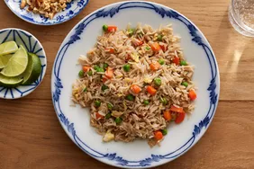

Ingredients;
- 4 cups of water
- 4 cups cooked rice
- 2 tablespoons sesame oil
- 2 tablespoons olive oil
- 3 tablespoons thinly sliced green onions
- 3 large eggs, lightly beaten
- 2 tablespoons of chopped Veggies(carrot, green peas, sweetcorn, kidney beans, bell pepper, spring onion)
- 1 pound uncooked medium shrimp, peeled and deveined and chopped liver
- 2 cloves garlic, finely minced, or more to taste
- ½ teaspoon freshly ground black pepper, or to taste
- 3 tablespoons low-sodium soy sauce, or more to taste
- ½ teaspoon of condiments (fried rice powder, seasoning cubes, salt, ginger and garlic paste or powder, thyme, curry) to taste
Steps for making the dish
- Heat sesame oil and olive oil in a large nonstick skillet or wok over medium-high heat. Add shrimp and liver to cook until they are bright pink on the outside and the meat is opaque, about 3 minutes, flipping halfway through.
- Remove shrimp and liver from the skillet using a slotted spoon, allowing oils and cooking juices to remain in the skillet. Place shrimp on a plate and set aside.
- Add peas and carrots and corn to the skillet and cook, stirring intermittently, until vegetables begin to soften, about 2 minutes. Add garlic; cook and stir for 1 minute. Push vegetables to the side of the skillet, pour eggs into the other side, and cook to scramble, stirring as necessary, 3 to 4 minutes.
- Stir shrimp, liver, rice, and green onions into the skillet. Drizzle evenly with soy sauce, season with salt and pepper, and stir to combine. Cook until shrimp is reheated through, about 2 minutes.
